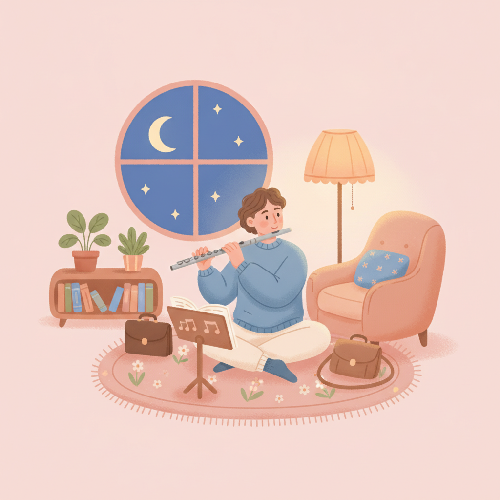

成人零基礎學音樂會太晚嗎？關於年齡的迷思
每次有大人來問我課，第一句話幾乎都一樣：「我這年紀，還來得及嗎？」我想先給你一顆定心丸——來得及。而且，遠比你想的還來得及。

我教過不少從零開始的成人學生。有人四十歲才第一次摸鋼琴，有人退休後才拿起長笛。他們剛開始都會緊張，覺得自己手很笨、腦袋很慢，好像比別人晚了一大截。
但練了幾個月之後，那種「我做不到」的表情，會慢慢變成「咦，我好像可以」。這個轉變，每次看都很感動。
「太晚」其實是一種迷思
很多人以為學樂器有個隱形的截止日期，過了某個年紀大腦就「定型」了。其實不是這樣。大腦終身都有可塑性，只要你持續給它新的刺激，它就會長出新的連結。學音樂沒有年齡上限這回事。
你看那些七、八十歲還在學畫、學語言、學樂器的人，他們不是天賦異稟，只是沒有先把自己關起來。
年齡從來不是門檻。真正擋住人的，往往是「我太晚了」這句話本身。
大人學音樂的三個隱形優勢
說真的，成人學音樂有些小孩比不上的優勢。第一是理解力強，你聽得懂樂理背後的邏輯，老師講一個概念，你不只記住、還能延伸，一通百通。
第二是目標明確，你很清楚自己想要什麼——是想彈一首老歌，還是單純想放鬆，方向清楚，路就不會繞。第三是自律，大人不太需要人在旁邊盯，時間到了會自己坐下來練。
這三件事，加起來其實很可觀。小孩贏在起步早，大人贏在懂自己。

手指比較硬、記性變差怎麼辦
我不騙你，大人確實有些先天差異。手指沒小時候那麼靈活，新東西記起來也稍微慢一點。這是真的。但這些不是障礙，是可以練的。
手硬，就放慢速度、放鬆肩膀和手腕，一段一段慢慢來；記不住，就把曲子切小塊，一次只啃一小口。我都跟學生說，慢練不是退步，是最快的捷徑。
用對方法，這些所謂的劣勢，幾個禮拜就被你磨平了。
給自己一個對的目標
你不需要跟那些拚命考級的小孩比，那不是你的賽道。大人學音樂，目標可以很自由——培養興趣、下班紓壓、圓一個年輕時沒實現的夢，每一個都很好，沒有高下。
我會建議，把目標設成「享受」，而不是「達標」。當你想的是「我今天好好享受了這十分鐘」，而不是「我又沒練到位」，你才會願意一直彈下去。
能一直彈下去，比彈得多快多難，重要太多了。
哪些是適合大人的零基礎樂器？
常有人問我，適合大人的零基礎樂器到底是哪一種。我的答案通常是鋼琴或長笛，理由很實際。
鋼琴按下去就有聲音，不用先跟音準搏鬥，你可以把力氣全部放在音樂本身；長笛輕巧好帶，下班背著就走，練氣息的過程還順便讓身體放鬆下來。都很適合。
不過比起「哪個樂器比較好」，我更在意哪個聲音讓你心動——你喜歡它的聲音，才會想一直靠近它。如果還拿不定主意，我在鋼琴與長笛的特性比較那篇寫得更細，雖然是寫給家長挑給孩子的，但那套邏輯，大人一樣適用。
從今天開始的小步驟
如果你真的想試試，其實不用想得太複雜。第一，每天留十到十五分鐘就好，少而規律，遠勝過一週猛練一次。第二，選一首你真心喜歡、聽到會想跟著哼的曲子，喜歡才有動力撐過卡關的時候。
第三，找一個願意配合大人步調的老師，不催不趕，陪你用舒服的節奏前進。如果你正在猶豫，不妨先跟我聊聊，我會依你的狀況，把進度安排得剛剛好。
別再等了。今天，就是最好的時機。
快速重點
- 學音樂沒有年齡上限，大腦終身都能學新東西。
- 大人有理解力、目標感、自律三個隱形優勢。
- 手硬、記性差都能靠慢練與分段克服，不是障礙。
- 鋼琴與長笛都是適合大人的零基礎樂器，先選你心動的聲音。
- 把目標設成「享受」，每天十五分鐘就能開始。